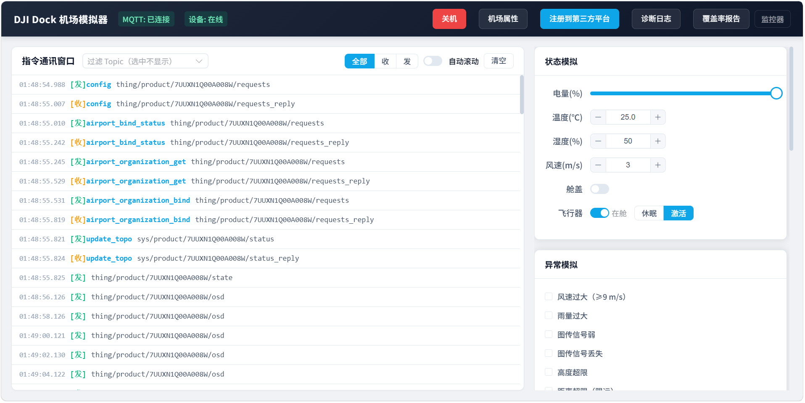
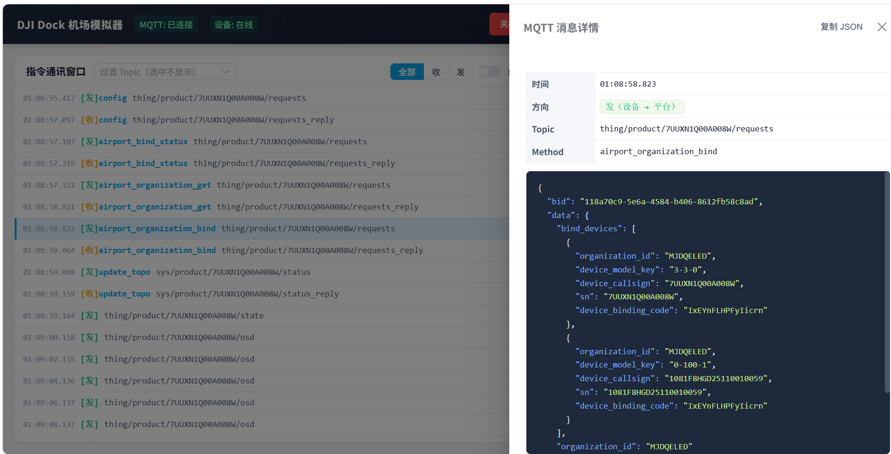
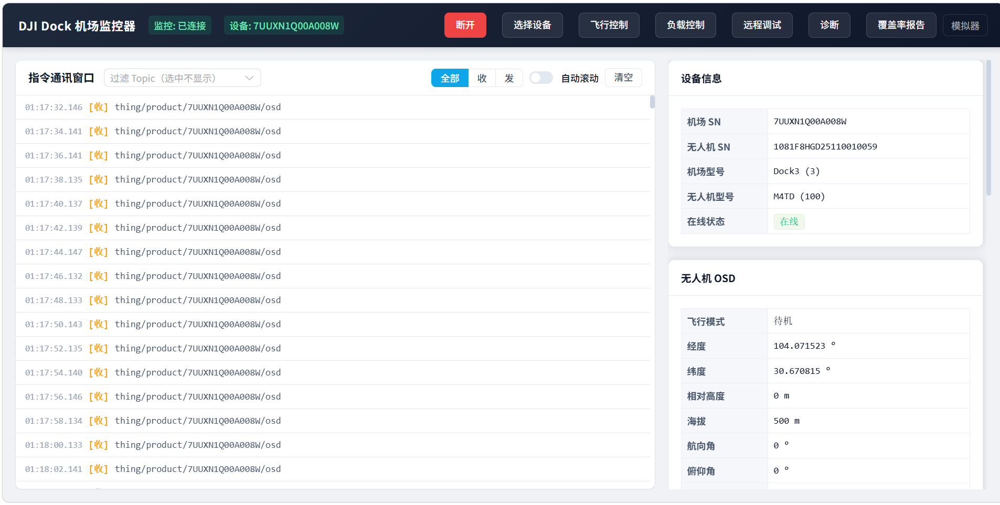
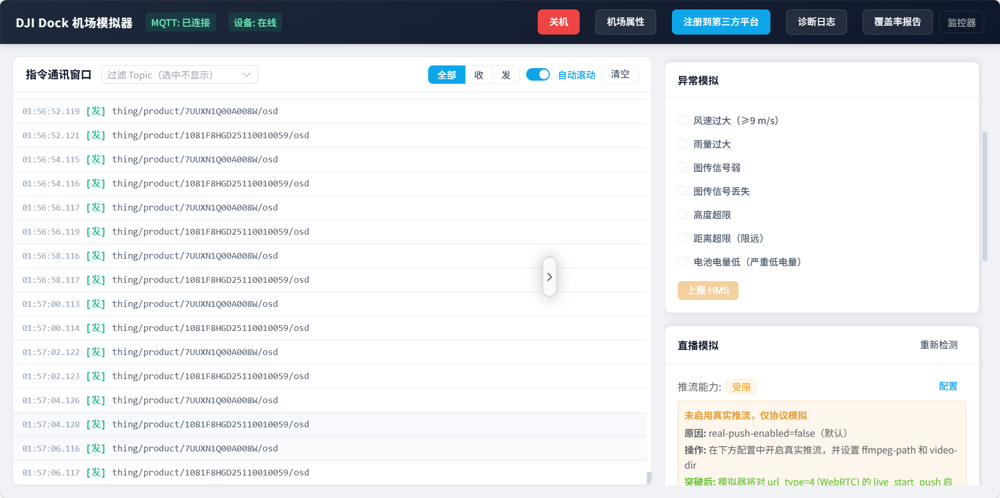
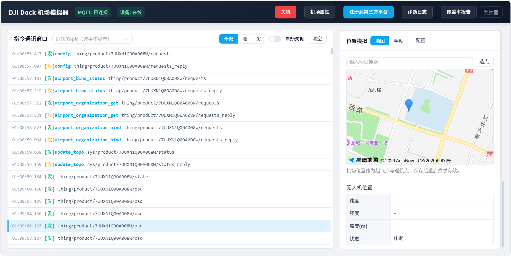
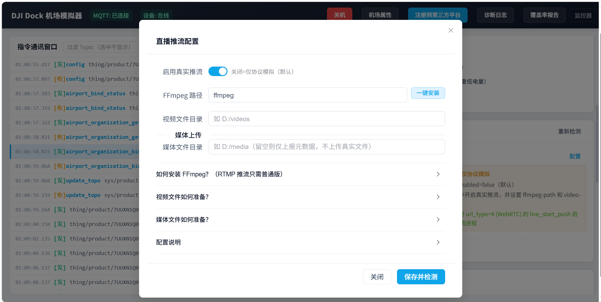

开发大疆 Cloud API 后端平台，最头疼的事情之一，代码写完了，手头没有机场，没有飞行器。
注册流程跑不通。OSD 上报没法测。航线任务、直播推流、媒体上传、HMS 告警，每一环都需要真实设备来验证。
等真机到位，开发周期已经被拉长了几个星期。更别提真机状态不可控，同一个 bug 想复现第二次，得等天气、等电量、等空域。
我们做了一个开源项目来解决这个问题。
01
它是什么
hivemind-simulator，一个大疆机场模拟器。模拟 Dock1、Dock2、Dock3 三代机场及其配套飞行器的完整云端交互流程，通过 MQTT 按 DJI Cloud API 协议与你的后端平台通信。
不需要任何真实硬件。
一句话定位，比真机更快捷地验证平台代码正确性。状态可控、场景可复现、迭代周期从「天」缩到「秒」。

模拟器主界面，Dock3 + M4TD 配置，设备已在线，左侧实时展示 MQTT 收发报文
打开模拟器，填好 MQTT 地址和凭证，点「注册到第三方平台」。几秒钟内，config、airport_bind_status、airport_organization_get、airport_organization_bind、update_topo，完整注册时序一路跑完，设备上线。
然后你的平台就开始收到 0.5Hz 的 OSD 遥测数据了。机场电量、温度、湿度、风速、舱盖状态、飞行器在舱状态，全都有。飞行器激活后，经纬度、高度、航向、俯仰、速度，也全都有。
不是假数据，是按 DJI 文档规定的字段集和格式构造的。不同机型字段不同，M30 和 M4D 的 OSD 字段集不一样，Dock1 和 Dock3 的 State 字段集也不一样。模拟器内部用 Builder 模式加策略模式，按设备类型精确构造。
02
协议覆盖到底有多全
先把覆盖的协议通道列一下。
requests / requests_reply
events / events_reply
services / services_reply
status / status_reply
property / set / set_reply
state
osd
DRC 通道（drc/down 20+ 下行指令，drc/up 11+ 上行推送）
具体到业务场景，这些都能模拟。
航线任务，flighttask_prepare 到 flighttask_execute，6 步进度推进，任务完成后自动触发媒体上传。支持暂停、恢复、取消、停止。
直播推流，FFmpeg WHIP 真实 WebRTC 推流，不是纯协议应答。ffmpeg 不支持 WHIP 时自动降级 RTMP。推流期间还能切镜头、调清晰度。
媒体上传，storage_config_get 拿 STS 凭证，S3 兼容协议上传到对象存储，支持阿里 OSS、AWS、MinIO、华为 OBS。file_upload_callback 逐个上报，等 events_reply 确认。
DRC 远程指挥，摇杆控制、应急停止、迫降、相机夜视、补光灯、喊话器。指令飞行一键起飞、flyto 目标点、飞行和负载控制权抢夺，异步双阶段确认。
远程调试，同步 Cmd 指令和异步 Job 指令都覆盖了。开盖、推杆、充电、重启、格式化、eSIM、RTK 标定。三 Dock 指令集差异精确处理，Dock1 独有 putter，Dock3 独有 rtk_calibration。
还有 HMS 告警、自定义飞行区、远程解禁（7 种证书类型）、PSDK 喊话器、ESDK 互联互通、远程日志、OTA 固件升级、AirSense。
每一条 MQTT 消息都在左侧指令通讯窗口实时滚动展示，收发方向、时间戳、topic、method 一目了然。点开任意一条，右侧弹出 JSON 详情，格式化高亮，还能一键复制。

点击任意 MQTT 消息查看 JSON 详情，格式化高亮，一键复制
03
两个工具，一个闭环
模拟器只是其中一半。
另一半是监控器，一个独立的 MQTT 客户端，以第三方视角监听平台上所有设备消息。不模拟设备，只观察。

监控器界面，实时展示设备 OSD 遥测数据，支持飞行控制、负载控制、远程调试等操作下发
模拟器扮演设备，监控器扮演平台侧的调试终端。两个工具配合使用，你可以同时看到「设备发了什么」和「平台收到了什么」，协议对接的问题一眼就能定位。
监控器还能主动下发指令。飞行控制、负载控制、远程调试、HMS 告警查询、航线任务监控、直播流监控，都有对应的面板。甚至有指令模板库，存好常用 JSON 模板，一键下发。
04
不只是协议模拟
如果只是协议应答，那和 mock 没什么区别。这个项目做了几件更进一步的事。
故障注入。异常模拟面板提供 7 种 HMS 告警场景，风速过大、雨量过大、图传信号弱、图传信号丢失、高度超限、距离超限、严重低电量。勾选后点「上报 HMS」，模拟器会按 DJI HMS 错误码规范构造告警消息推送到平台。可以组合触发，比如同时模拟「低电量加信号丢失」，验证平台的返航决策逻辑。

异常模拟面板，勾选告警场景后上报 HMS，可组合触发
位置模拟。集成高德地图，在地图上选点作为机场位置，自动获取海拔（Open-Meteo Elevation API）。机场位置作为起飞点和返航点，保存后重启依然有效。也支持地址搜索和手动输入坐标。

位置模拟，高德地图选点，自动获取海拔，保存后持久化
真实推流。直播不是只回一个「推流成功」的协议应答。启用真实推流后，FFmpeg 会读取本地视频文件，通过 WHIP 协议推 WebRTC 流到你的流媒体服务器。视频循环播放，持续推流，直到你发 stop_push。没有 FFmpeg？模拟器内置一键安装。不支持 WHIP？自动降级 RTMP。

直播推流配置，启用真实推流后 FFmpeg 通过 WHIP 推 WebRTC 流
真实媒体上传。媒体上传也不是只发元数据回调。配置好媒体文件目录后，模拟器会通过 S3 兼容协议把真实文件上传到对象存储，然后逐个发 file_upload_callback 等平台确认。不配目录就只发元数据，降级策略很灵活。
05
456 个测试用例保底
这是最值得展开的一点。
项目采用 TDD 驱动开发。每个功能，先基于 DJI 官方文档写规格测试用例，再写实现代码。不是写完代码补测试，是测试先行。
目前有 456 个规格测试用例，覆盖 31 个测试分类。MQTT 连接、注册流程、设备上线、OSD 上报、DRC 指挥、指令飞行、远程调试、直播、媒体上传、航线任务、AirSense、飞行区、远程解禁、PSDK、ESDK、远程日志、固件升级，每个模块都有对应的 Given-When-Then 测试用例。
测试用例基于 DJI 官方文档规格编写，不是基于实现代码。这意味着测试用例本身就是对 DJI Cloud API 协议的一份结构化解读。协议改动时，先改测试用例，再改实现，保证实现永远跟文档对齐。
还有一个诊断系统。DJI Cloud API 方法覆盖率统计，能看到你的平台调了哪些方法、哪些还没测到。MQTT 消息格式规格校验，收到不符合 DJI 文档的消息会标记异常。三层错误码体系（P/S/M），区分平台侧、模拟器侧、协议推断侧的责任方。
06
支持的设备
三代机场全覆盖。
Dock 模式：Dock1（M30/M30T）、Dock2（M3D/M3TD）、Dock3（M4D/M4TD）
Pilot 模式：RC Plus / RC Plus 2 / RC Pro 遥控器，搭配 M350 RTK、M300 RTK、Mavic 3E/3T/3TA、M400、M4E/M4T 等飞行器
Pilot 模式是 v1.1.0 新增的。遥控器直接接入云平台，不需要机场。MQTT 连接后直接上线，走不同的 DRC 协议策略（RC Pro 走 services，RC Plus 2 走 DRC 通道）。还模拟了 Pilot 的 HTTP/WebSocket 接口，地图元素、态势感知、媒体、航线、MOP 全覆盖。
07
三分钟上手
两种方式。
桌面端安装（推荐非开发者）
下载 DJI Dock Simulator_x64-setup.exe，运行安装，启动后自动打开控制台。Tauri 打包，内置精简 JRE，不需要装 Java。
源码编译（推荐开发者）
clone 仓库，mvn spring-boot:run，浏览器打开 localhost:9090。
联调步骤也很简单。启动 EMQX broker，启动你的巡飞平台，启动模拟器，填好配置点注册，设备自动上线。然后你的平台就可以下发航线任务、发起直播、推送 DRC 指令，观察模拟器的响应。
整个链路跑通，不用等真机，不用等天气，不用等空域。
08
写在最后
这个项目的起点很朴素，我们在开发巡飞平台（hivemind）的时候，需要一个能快速验证后端代码的工具。真机调试太慢，mock 太浅，我们需要一个「状态可控、协议完整、能复现场景」的模拟器。
市面上没有现成的方案，于是自己做了一个。现在把它开源出来，希望对同样在做 DJI Cloud API 对接的团队有用。
项目采用 AGPLv3 协议，代码托管在 GitHub。欢迎 Star、Fork、提 Issue、提 PR。如果你在做大疆机场的云端对接，或者在学习 DJI Cloud API 协议，这应该能帮上忙。
GitHub
github.com/cdmiltd/hivemind-simulator
DJI Cloud API 官方文档
developer.dji.com/doc/cloud-api-tutorial/cn/
如果你觉得有用，给个 Star。这是对我们最大的鼓励。